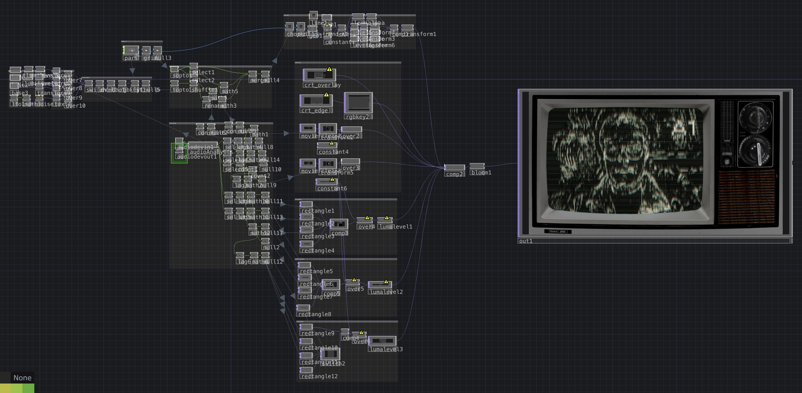

Overview
Rewind is an audio-reactive visual piece built in TouchDesigner that uses live camera input and audio analysis to emulate the visual characteristics of CRT televisions. Many defining genres of music — from 60s Soul to 80s Funk and 90s Hip Hop — emerged during the era when CRT technology was dominant, making it culturally symbolic of performance broadcasts and the aesthetics of music history. Rewind draws on this intersection of technology and musical heritage to recreate the feel of CRT displays while reacting in real time to sound and camera motion.

Click image to view gallery
Methods
The core of the piece is a simulated CRT screen effect composed of dozens of horizontal light rows that collectively form a moving image. This is achieved using a Grid SOP driven by multiple CHOP operators, transforming the live camera input into line segments whose thickness varies to represent light and dark values. A layered image overlay frames the output within a CRT display unit.
To integrate music reactivity, audio input is analyzed through a network of CHOPs, causing the CRT lines to “warp” whenever low-frequency thresholds are reached. Visual controls on the unit respond as well: the top knob rotates with the same audio response, while the bottom knob toggles between different Switch TOP inputs to mimic changing TV channels.
Additional audio visualization elements reinforce the CRT aesthetic. A grille in the bottom right houses a classic bar-style frequency meter that displays low, mid, and high audio bands using the RGB color palette associated with analog displays. A vertical RGB-based color strip appears on the control panel, sharing the same reactive data with lowered alpha, allowing layered spectrums to emerge. Even the vintage “Sears” logo pulses between red, green, and blue on each musical beat and channel change.
During playback of “Billy Jack” by Curtis Mayfield, the channel label in the upper right dynamically switches between A1, A2, A3, and A4. Each label corresponds to different media routed into the CRT effect — previous TouchDesigner works from the ARTT370 course — creating a broadcast-style anthology viewed through a retro lens.

Click image to view gallery
Takeaways
Rewind explores how CRT-era broadcast aesthetics can be fused with modern audio-reactive techniques, connecting the history of popular music to contemporary real-time media tools. The project highlights how TouchDesigner’s SOP, TOP, and CHOP families can be combined to simulate analog visual systems while remaining flexible for performance and improvisation.
Through developing this piece, I gained valuable experience in camera processing, channel routing, audio frequency parsing, and layered compositing in TouchDesigner. Most importantly, the process revealed how technical constraints — such as CRT line counts, RGB palettes, and analog distortions — can be used creatively to produce compelling contemporary visuals.